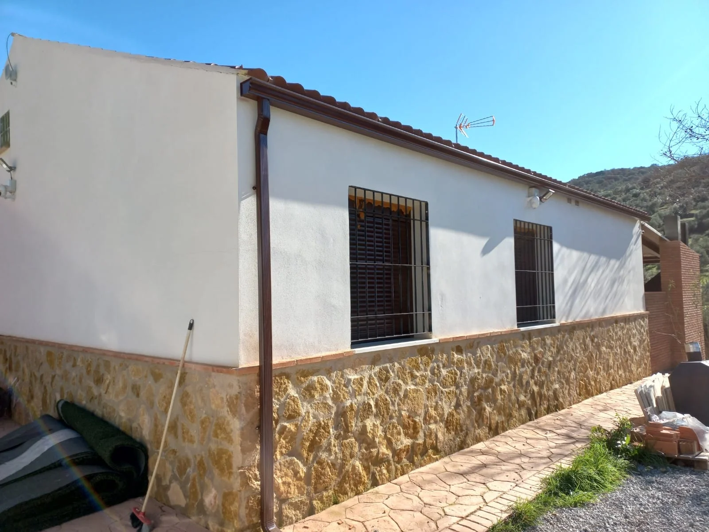

¿Qué es Canalplad?
Canalplad es una empresa dedicada a instalación de canalones y montaje de pladur. Somos un grupo familiar de 4/10 trabjadores en Villafranca de Córdoba situado en la provincia de Córdoba Nos dedicamos a la Instalación de Canalones,, también nos encargamos de la limpieza de los canalones para evitar un atasco y que produzca humedades y al montaje de pladur en hogares, oficinas...

Contamos con una gran variedad de herramientas de trabajo para garantizar la mayor seguridad de nuestros trabajadores y a lo largo de la trayectoria de la empresa contamos con muchos trabajos en la Provincia de Córdoba.